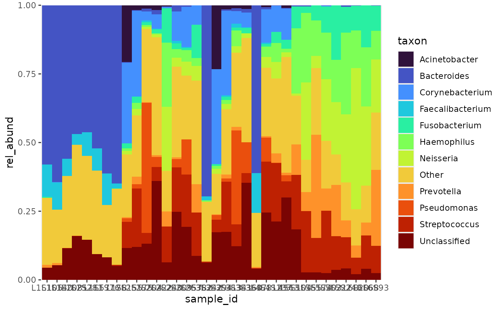
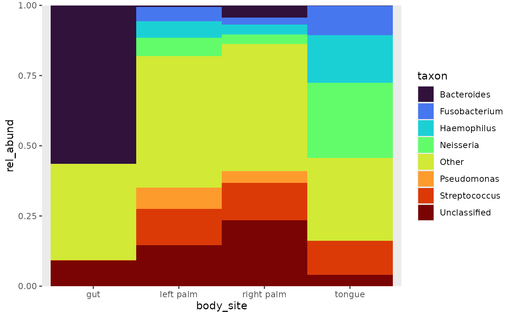
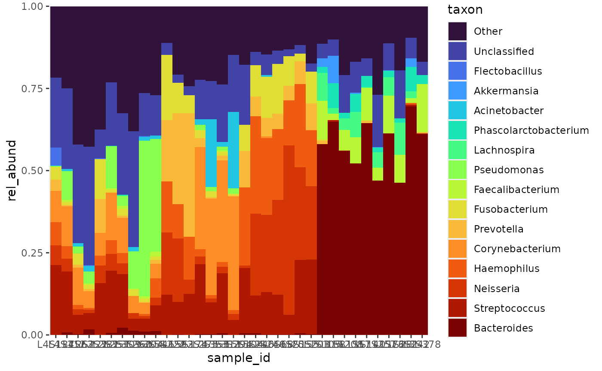

3. Pooling and arranging
pool_taxa.RmdPooling taxonomy
The taxonomic level is selected with the taxa_level
argument, when generating the relative abundance table. By default it is
set to “Phylum”. Let’s see how many different taxa are present in a
table.
library(dplyr)
rel_abund <- rel_abund_qiime(counts_q, taxa_q, metadata_q, taxa_level = "Genus")
rel_abund %>%
summarise(unique_taxa = n_distinct(taxon)) # see how many unique taxa there are
#> # A tibble: 1 × 1
#> unique_taxa
#> <int>
#> 1 196There are 196 unique taxa in the relative abundance table. If we
attempt to plot this right away, the legend will include all these taxa.
The table must be filtered to pool taxa below a given threshold. The
pool_taxa function can be given a numerical threshold or
the number of taxa that should be displayed. In the latter case, the
threshold is determined automatically.

Pooling, by default will remove any meta data that was attached to
the relative abundance table. Specify keep_metadata to keep
it. Setting label to FALSE will set the threshold label in
the legend to “Other”.
rel_abund %>%
pool_taxa(n_taxa = 8,
keep_metadata = TRUE,
label = FALSE) %>%
bar_plot(position = "fill", x_var = "body_site")
Arranging
Taxa
In the legend, taxa are ordered alphabetically, which is the default
for ggplot2 when dealing with character variables. Sorting
the taxa by their abundance would be more meaningful. Using the
arrange_taxa function, taxa can be arranged in ascending
order, or flipped by setting the order argument to “top” or
“bottom”. The threshold order can also be changed by setting the
pooled argument to “top” or “bottom”. After ordering, it
becomes clear that Bacteroides is the most abundant taxon in
the gut, and Streptococcus among the other samples.
rel_abund %>%
pool_taxa(n_taxa = 8,
keep_metadata = TRUE) %>%
arrange_taxa(pooled = "top", order = "bottom") %>% # arrange by abundance
bar_plot(position = "fill", x_var = "body_site") +
labs(y = "mean_rel_abund")
Variable
Another option is to arrange the samples by a variable, which can be
useful when the data includes metadata. Observe the similarities between
the above and below plots. The above plot represents the mean relative
abundances among the levels of body_site, and the bottom
plot represents the relative abundance by sample, ordered by
body_site.
rel_abund %>%
pool_taxa(n_taxa = 8,
keep_metadata = TRUE) %>%
arrange_taxa(pooled = "top", order = "bottom") %>% # arrange by abundance
arrange_var(var = "sample_id", levels = "body_site") %>%
bar_plot(position = "fill") 
Samples by taxa abundance
Samples can be arranged by taxa abundance. I first saw this technique
used by Chenxin Li, in their github repo: Friends
Dont Let Friends Make Bad Graphs. Combined with
bubbler::arrange_taxa,
bubbler::arrange_sample_by_taxa will partition samples by
their most abundant taxa. In the absence of meta data, this is a good
preliminary visualization to produce.
rel_abund %>%
pool_taxa(n_taxa = 16) %>%
arrange_taxa() %>%
arrange_sample_by_taxa() %>%
bar_plot(position = "fill") 